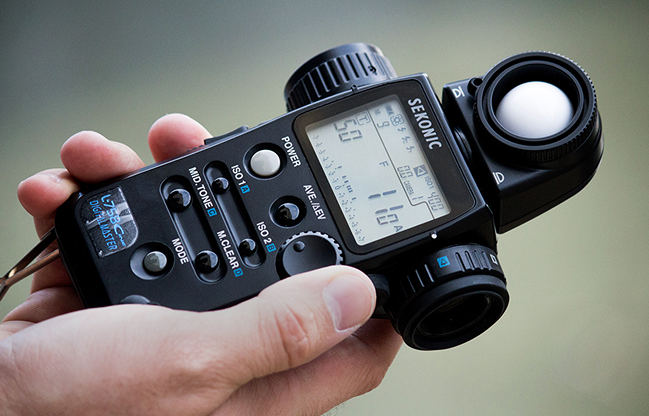
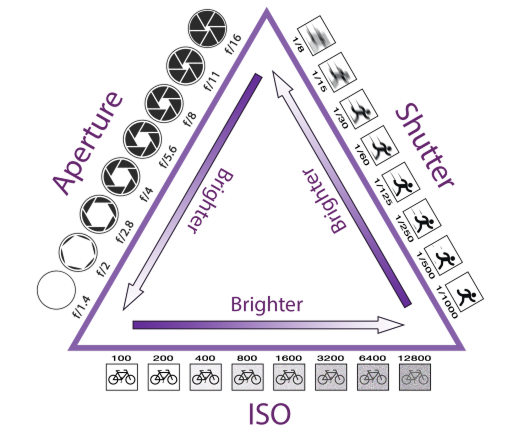
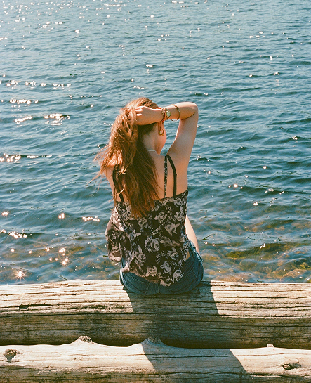

Light Meter

A light meter in a film camera measures the amount of light in a
scene to help determine the correct exposure settings. It suggests
the best combination of aperture, shutter speed, and ISO based on
the lighting conditions. Some film cameras have built-in light
meters, while others require a handheld one. Using a light meter
helps ensure your photos are neither too dark nor too bright, giving
you better control over the final image.
Exposure Triangle

The exposure triangle is a concept in photography that shows how
three settings—aperture (f-stop), shutter speed, and ISO—work
together to control exposure. Aperture controls how much light
enters the lens and affects depth of field. Shutter speed determines
how long the film is exposed to light, affecting motion blur or
sharpness. ISO is the film's sensitivity to light, influencing
brightness and grain. Balancing all three helps you achieve a
properly exposed and visually balanced photo.
Film & Camera Type
Different film brands and types affect the look of film photos by
altering color, contrast, grain, and tone. Kodak Portra, Fujifilm
Pro 400H. Ilford HP5 CineStill 800T. Each film stock has a unique
look, so choosing a brand and type depends on the desired mood and
aesthetic you want to create with your image.
Here are some examples of photos taken with different film types.
The colors, tones, and grain vary depending on different brands of
film. Experimneting with different types of film can help you find a
style of photography you love!

Fujifilm: FujiColor 200